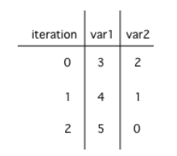

Part 1: Loop Tracing and Iteration Counting
In this lesson, you will practice tracing through code with loops and analyzing loops to determine how many times they run.
Let’s practice tracing through loops with many variables.
Remember to make a tracing table to keep track of all the variables, the iterations, and the output.
activecode:: example_trace_loopTextbook prompt: Here is a complex loop.
See if you can trace the code on paper by making a tracing table to predict what the code will do when you run it.
Add output statements before the loop and inside the loop at the end to keep track of the variables and run.
activecode:: example_trace_loopactivecode:: example_trace_loopRunestone expects this output after adding the requested print statements:
example_trace_loopDid your trace table look like the following?

The 0 means before the first loop.
mchoice:: loop-trace-countWhat are the values of var1 and var2 when the code finishes executing?
mchoice:: loop-trace-countvar1 = 1, var2 = 1var1 = 2, var2 = 0var1 = 3, var2 = -1var1 = 0, var2 = 2mchoice:: loop-trace-countCorrect answer: B. var1 = 2, var2 = 0
The loop stopped because var2 = 0.
After the first execution of the loop var1 = 1 and var2 = 1. After the second execution, var1 = 2 and var2 = 0.
This does not cause a run-time error because of short-circuit evaluation: when var2 is 0, the first condition in the && is false, so the second condition is not executed.
mchoice:: loop-trace-count2What are the values of x and y when the code finishes executing?
mchoice:: loop-trace-count2x = 5, y = 2x = 2, y = 5x = 5, y = 2x = 3, y = 4x = 4, y = 3mchoice:: loop-trace-count2Correct answer: E. x = 4, y = 3
The first time the loop changes to x = 3, y = 4.
The second time x = 4, y = 3, and then the loop stops since x is not less than y anymore.
Loops can be also analyzed to determine how many times they run.
This is called run-time analysis or a statement execution count.
A statement execution count indicates the number of times a statement is executed by the program.
Statement execution counts are often calculated informally through tracing and analysis of the iterative statements.
activecode:: countstars1Textbook prompt: How many stars are printed out in this loop?
How many times does the loop run?
Figure it out on paper before you run the code.
activecode:: countstars1activecode:: countstars1Runestone expects the output:
If you made a trace table, you would know that the loop runs when i = 3, 4, 5, 6 but finishes as soon as i becomes 7 since that is not less than 7.
So, the loop runs 4 times.
The number of times a loop executes can be calculated by:
< and <=counter <= limit, limit is the largest value.counter < limit, limit - 1 is the largest value that allows the loop to run.In the code above the largest value that allows the loop to run is 6, the largest value less than 7, and the smallest value that allows the loop to execute is 3.
So this loop executes 6 - 3 + 1 = 4 times.
largestValue - smallestValue + 1 with < and <= correctly